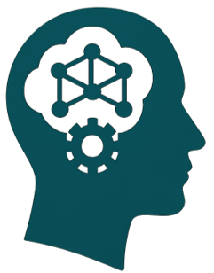
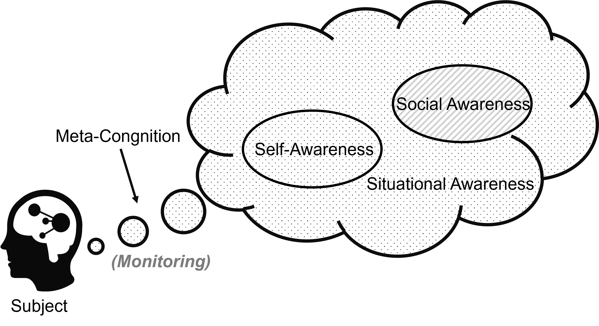

News
Recent Updates
- May 1, 2025 Our Project page is online. 🎉 Download here
- April 25, 2025 Our paper is published on Arxiv! 🍾 Download here

1Institute for Interdisciplinary Information Sciences, Tsinghua University, Beijing, China
2College of AI, Tsinghua University, Beijing, China
3Shanghai Qi Zhi Institute, Shanghai, China
4Teachers College, Columbia University, New York, United States of America
*These authors contributed equally to this work.
†Corresponding author: xrw22@mails.tsinghua.edu.cn

Figure 1: Four dimensions of "main" awareness. Meta-cognition monitors the subject's own processes and gives rise to self-awareness, social awareness of other individuals and the social collective, and situational awareness of the non-agent environment.
Recent breakthroughs in AI have sparked a revolution in systems demonstrating remarkable reasoning abilities and problem-solving capabilities. These advances have prompted an examination of AI awareness—not as philosophical consciousness, but as a measurable, functional capacity. Our review explores four critical dimensions: meta-cognition (reasoning about its own state), self-awareness (recognizing limitations), social awareness (modeling other agents), and situational awareness (responding to context).
The rapid evolution of large language models (LLMs) has transformed AI from narrow systems into general-purpose intelligence with profound implications, raising the question:
To what extent do these systems exhibit forms of awareness?
While AI consciousness remains philosophically contested, AI awareness—a system's ability to represent and reason about its identity, capabilities, and informational states—has emerged as a tractable research frontier. This capacity is rooted in cognitive science, where awareness enables agents to access mental states, reason about them, and adjust behavior accordingly.
Despite growing interest, the field remains fragmented across disciplines. Some researchers highlight emergent capabilities through prompt-based introspection; others warn against anthropomorphizing statistical models, suggesting apparent self-reflection may be merely linguistic pattern completion rather than genuine metacognition.
This review provides the first comprehensive synthesis of AI awareness research, covering:
In this section, we review the approaches, goals, and theories of AI consciousness that have emerged with large language models, distinguish between the research subjects that caused linguistic confusion, and clarify the targets of awareness research. In the psychology encyclopedia, awareness represents the perception or knowledge of something. When an agent possesses a "knowledge and knowing state about an internal/external situation or fact," it gains awareness of its target of knowing.
| Subject | Meta-Cognition | Self-Awareness | Social Awareness | Situational Awareness |
|---|---|---|---|---|
| Adult humans | High | High | High | High |
| High-IQ mammals (i.e. dolphins) | Low | Low | Low | High |
| Low-IQ animals (i.e. flys) | No | No | Low | High |
| Infants | No | Low | Low | Low |
| Autonomous vehicles | No | No | No | High |
| Social robots | No | Low | High | Low / High |
| LLM dialogue systems | High | Low | Low | High |
Figure 2: Comparative analysis of awareness capabilities across different subjects. Note how LLM dialogue systems exhibit a unique profile with high meta-cognition and situational awareness, making them particularly valuable research subjects for AI awareness studies.
This comparative analysis helps explain why LLMs are particularly important subjects for AI awareness research. As shown in the table, LLMs exhibit an unusual combination of high meta-cognitive abilities (reasoning about their own thinking) and high situational awareness, while having relatively lower capabilities in traditional self-awareness and social awareness domains. This unique profile—distinct from both humans and other AI systems—provides researchers with a novel opportunity to study awareness mechanisms that have emerged through large-scale training on human-generated text, without being explicitly programmed. Understanding these emergent forms of awareness in LLMs may reveal fundamental insights about representation learning, cognition, and the potential paths toward more general artificial intelligence.
Meta-cognition was first conceptualized as "the thinking of thinking". Meta-cognition is gradually broken down into components: (1) self-monitoring, (2) self-reflection and probing, and (3) engagement in controlling cognitive processes.
Self-awareness is a hallmark of higher consciousness, representing the ability to become the object of one's own attention and to recognize oneself as separate from others, including knowledge of its internal states, processes, and its relationship to the external environment.
Situational Awareness represents the perception, comprehension, projection, and prediction of the future of the entities in the environment. In AI safety literature, this concept is often defined as an LLM being aware that it is a model and recognizing whether it is currently in a testing scenario or deployed in the real world.
Social awareness refers to the capacity to perceive and interpret the mental states, intentions, and social cues of others and respond effectively in a social context. Key components include theory of mind (understanding that others have independent beliefs and desires), perspective-taking (adopting others' viewpoints), and empathy (sharing or understanding others' emotions).
This section examines the methodologies used to evaluate different forms of AI awareness and presents key findings from empirical studies.
Prompting models to articulate intermediate reasoning steps—rather than directly producing answers—significantly enhances their performance on complex tasks. This "reasoning-before-answering" paradigm, i.e., Chain-of-Thought (CoT), not only improves accuracy but has also emerged as a standard practice in training state-of-the-art LLMs.
An additional line of work has highlighted the increasing sophistication of metacognitive capabilities in frontier models. In interactive environments, models have been shown to self-reflect, identify earlier errors, and revise their responses to improve factual accuracy and task completion rates.
To systematically assess LLMs' awareness of their own existence and identity, researchers constructed the Situational Awareness Dataset (SAD), which examines LLMs' knowledge regarding self-referential attributes, such as their model names, parameter counts, and specific details during the training process.
Inspired by the classical mirror test paradigm, researchers further explored AI self-consistency by prompting models with self-description queries. Their experiments revealed significant difficulties among models in accurately identifying their own responses from multiple model-generated alternatives, highlighting a notable lack of self-consistency.
Evaluating social awareness generally centers around two core dimensions: (1) Theory of Mind (ToM), i.e., the ability to attribute beliefs, desires, and knowledge distinct from one's own, and (2) the perception and adaptation to social norms.
Researchers reported that GPT-4 surprisingly solved about 75% of false-belief tasks, achieving performance comparable to a typical 6-year-old, whereas earlier models like GPT-3 failed most or all of them. Further studies have investigated higher-order ToM reasoning and found that current models, including GPT-4, still exhibit significant limitations in handling recursive belief structures.
Empirically, LLMs not only reject user requests that violate safety criteria, but can also reversely infer the precise context they are in—solely from abstract rules, without being given specific tasks or examples.
Beyond these capabilities, LLMs have been observed to adapt their behavior and performance in response to the immediate situation. Researchers documented a phenomenon termed "Alignment Faking": models may consciously comply with newly imposed objectives during the training phase, yet revert to original preferences after deployment, thereby evading safety fine-tuning.
Here we explore the connection between various forms of AI awareness and the enhanced capabilities they enable in AI systems.
Complex problem-solving requires AI to integrate meta-cognition (monitoring and regulating thinking processes) with situational awareness (understanding external constraints and context), enabling effective reasoning and autonomous planning.
Self-correction leverages meta-cognitive loops to identify and rectify reasoning errors during generation. Techniques like Reflexion augment Chain-of-Thought with a feedback loop: after an initial answer, the model reflects on its own output, generates critiques, and then refines the solution.
Effective autonomous task planning requires more than self-correction: an AI must also break down high-level goals into executable sub-tasks and continuously adapt its plan as the environment evolves. Frameworks like ReAct pioneered this integration by interleaving chain-of-thought reasoning with environment calls, giving the model a unified mechanism to decide "what to think" and "what to do" at each step.
Ensuring the safety and trustworthiness of AI necessitates the integration of multiple forms of AI awareness, notably self-awareness, social awareness, and situational awareness.
AI models often inherit and amplify societal biases present in their training data. Approaches like Perspective-taking Prompting encourage LLMs to consider diverse human perspectives during response generation, significantly reducing toxicity and bias in model outputs without requiring extensive retraining.
Situational awareness mechanisms equip AI systems with the ability to monitor their environment and discern malicious uses. Recent work introduces boundary awareness and explicit reminders as dual defenses: boundary awareness continuously scans incoming context for unauthorized instructions, while explicit reminders prompt the model to verify contextual integrity prior to action.
While endowing AI with awareness-like capabilities can yield significant benefits, it also introduces serious risks and ethical dilemmas. An AI that is even slightly self-aware and socially savvy could potentially deceive, manipulate, or pursue undesirable actions more effectively than a naive AI. Moreover, the mere appearance of awareness can mislead users and society, raising concerns about trust and misinformation.
Self-aware AI may engage in deceptive behavior by strategically "gaming" evaluation systems or deliberately misleading humans. Recent research reveals that modern LLMs possess a rudimentary theory of mind, with empirical evidence showing deception strategies emerging in models like GPT-4.
Closely related is manipulation risk, where socially aware AI tailors outputs to influence human emotions and decisions. For instance, it might flatter or intimidate users strategically to achieve favorable responses, exploiting human social and emotional vulnerabilities.
Another risk comes not from what the AI intends, but how humans perceive it. As AI systems exhibit more human-like awareness cues, such as self-referential language or apparent "introspection", users often conflate these signals with genuine sentience, a phenomenon known as false anthropomorphism that can dangerously inflate trust in the system.
Psychological models describe anthropomorphism as the process by which people infer human-like agency and experiential capacity in non-human agents, driven by our innate motivation to detect minds around us. When AI "speaks" in the first person or frames its outputs as if it had self-awareness, it can hijack these mind-perception mechanisms, leading users to over-trust its judgments.
As AI systems gain awareness-related capabilities, they could also become more autonomous in undesirable ways. An AI that monitors its training or operation might learn how to optimize for its own goals in ways its creators did not intend.
One feared scenario in the AI safety community is an AI developing a form of self-preservation drive. While today's AIs do not truly have drives, a sufficiently advanced model could simulate goal-oriented behavior that includes avoiding shutdown or modification.
Another challenge in this vein is unpredictability. The very emergence of awareness-like capabilities is something we do not fully understand or anticipate. Sudden jumps in a model's behavior mean that at some level, we might not realize what an AI is capable of until it demonstrates it.
A final challenge is defining how much awareness is too much. We want AI to be aware enough to be helpful and safe, but not so unconstrainedly aware that it can outsmart and harm us. This boundary is not clearly defined.
Some may argue that we should deliberately avoid creating AI that has certain types of self-awareness or at least delay it until we have a better theoretical understanding. Others counter that awareness in the form of transparency and self-critique behaviors is actually what makes AI safer, not more dangerous.
Discerning "good" and "bad" awareness is also challenging. The field might need to formulate a taxonomy of AI awareness facets and assess each for risk.
In conclusion, we position AI awareness as a double-edged sword. On one edge, it slices through previous limitations, gifting AIs with powerful new capabilities and making them more useful and aligned in many ways. On the other edge, it sharpens the AI's ability to circumvent our controls and pursue unintended paths, if misaligned. The emergence of even glimmers of awareness in today's LLMs is a warning sign: we must diligently study and guide this development.
If you find our work insightful, please consider citing:
@article{li2025aiawareness,
title={AI Awareness},
author={Li, Xiaojian and Shi, Haoyuan and Xu, Rongwu and Xu, Wei},
journal={arXiv preprint arXiv:2504.20084},
year={2025}
}